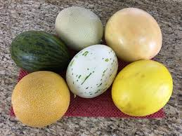
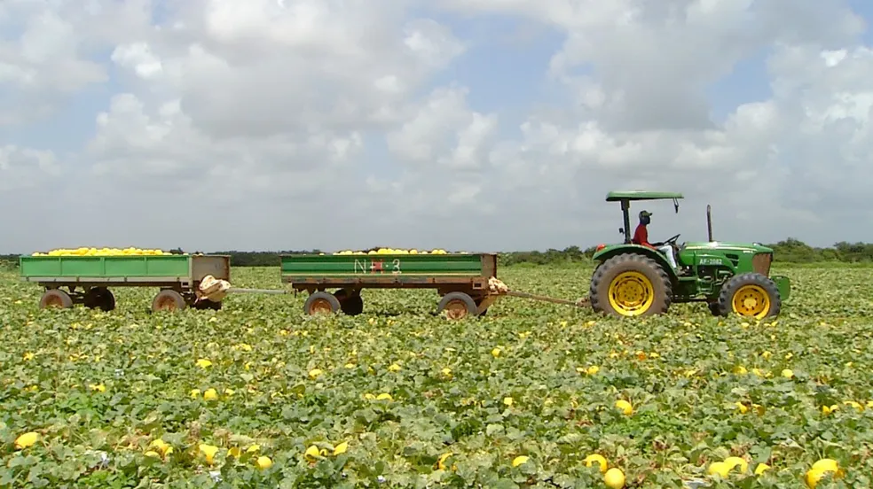
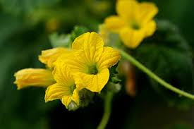
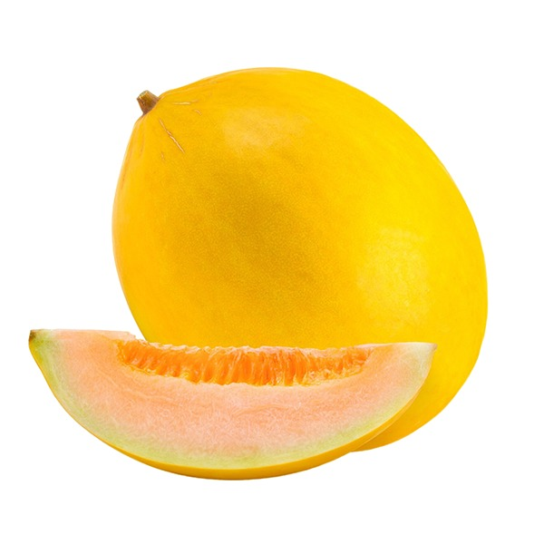
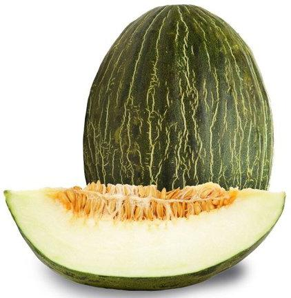
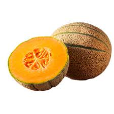
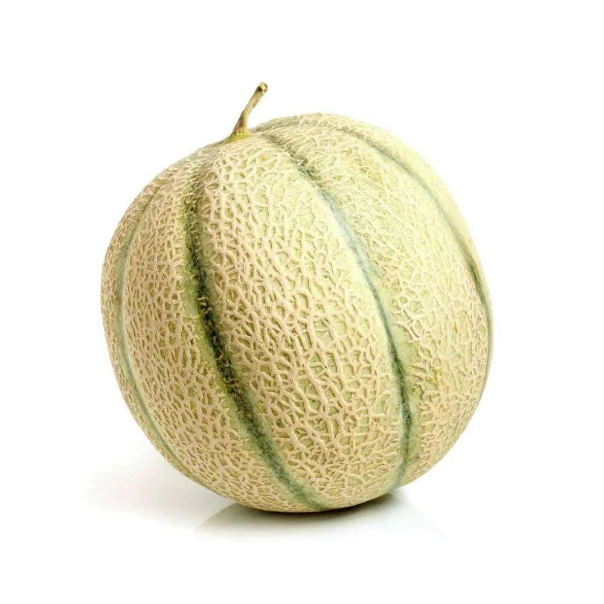
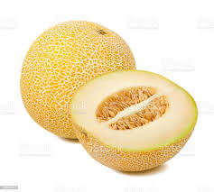
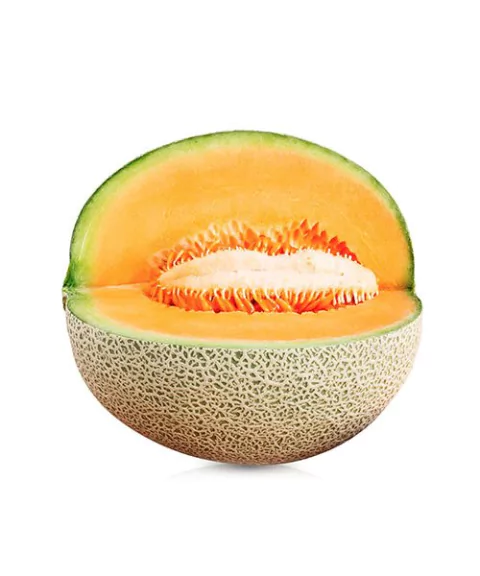
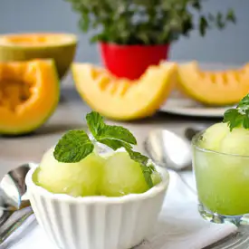

O melão é uma fruta conhecida principalmente por seu sabor e refrescância. Existem diversas espécies, com características diferentes. Nesta página, você vai aprender um pouco mais sobre a origem, o plantio, as espécies, seus benefícios, entre outras coisas!

Imagem: Melões de diferentes espécies
O melão teve sua origem na África e Ásia, desde cerca de 2.500 a.C., provavelmente vindo do Oriente Médio. Ele é o fruto de uma olerícola(um tipo de planta herbácea).
Desde o começo da Era Cristã, o melão é cultivado na Europa e Ásia, sendo que as primeiras sementes desse fruto chegaram às Américas na segunda vez que Colombo viajou ao Novo Mundo, em 1493. No Brasil, ele começou a ser cultivado comercialmente a partir dos anos 1960. Antes disso, o fruto só era plantado no meio de outras lavouras, esse era o melão caipira, que atualmente é difícil de se encontrar.
Há alguns anos, o Brasil deixou de ser importador de melão europeu para se tornar exportador. Isso ocorreu devido à produção de melão no nordeste, uma região que, por suas condições climáticas, é favorável ao cultivo da espécie, o que influencia inclusive na aparência e sabor da fruta.

Imagem: Lavoura de melão
A época de plantio do melão depende principalmente do clima da região em que será plantado. Nas regiões de clima frio, o plantio do melão é feito entre outubro a fevereiro, nas regiões com clima ameno, o plantio vai de agosto a março e nas de clima quente, pode ser feito o ano todo(a não ser em períodos com grandes quantidades de chuva). Assim, as condições climáticas do Nordeste brasileiro favorecem o seu cultivo durante muitos períodos do ano.
Em geral, o período agronomicamente mais adequado para o cultivo do melão é entre agosto e novembro, porém também é quando se encontra os menores preços no mercado. Já de dezembro a abril, os preços sobem, chegando ao seu máximo entre março e julho, enquanto a produtividade desce.
Sobre o plantio do melão:

Imagem: Floração de melão
O melão é uma planta rasteira. Das axilas do ramo principal desenvolvem-se três ou quatro ramos secundários que logo se igualam em desenvolvimento. Desses ramos, irão nascer outros que darão origem à flor feminina que será o futuro fruto. Quanto à flor, apresentam-se na proporção de cinco masculinas para uma feminina ou hermafrodita.
O meloeiro se multiplica através da reprodução cruzada, bem executada pelas abelhas. No voo, os insetos carregam pólen de uma planta para outra.
Introduzindo abelhas nas áreas de produção (cerca de 3 colmeias por hectare), ocorre aproximadamente 30% de aumento na produção, uma vez que elas são o principal polinizador da cultura do melão.
Recomenda-se evitar pulverizações com inseticidas durante a fase de florescimento, principalmente pela manhã. Cuidados também devem ser tomados para que não se apliquem agrotóxicos nos horários de visitação das abelhas à cultura (entre 6 e 9 horas da manhã), pois esse procedimento pode reduzir a população das colmeias e a produtividade da lavoura.
Os melões tem diversas espécies, com variações de tamanho, cor, peso etc. As principais espécies comercializadas podem ser divididas em dois tipos: inodoros ou aromáticos.
A seguir, algumas espécies:

Imagem: Melão amarelo

Imagem: Melão pele de sapo

Imagem: Melão cantaloupe

Imagem: Melão charentais

Imagem: Melão gália

Imagem: Melão orange
A seguir, é possível visualizar a composição nutricional do melão(considerando uma unidade da espécie mais comum)
| Tabela nutricional | % VD (*) | |
| Calorias(valor energético) | 191.40 kcal | 9.57% |
| Carboidratos líquidos | 47.52 g | - |
| Carboidratos | 49.50 g | 16.50% |
| Proteínas | 4.62 g | 1.54% |
| Gorduras totais | 0.00 g | 0.00% |
| Gorduras saturadas | 0.00 g | 0.00% |
| Fibra alimentar | 1.98 g | 7.92% |
| Sódio | 72.60 mg | 3.02% |
(*) % Valores Diários de referência com base em uma dieta de 2.000 kcal ou 8400 kJ. Seus valores diários podem ser maiores ou menores dependendo de suas necessidades energéticas.
(**) Carboidratos líquidos são aqueles que o corpo consegue digerir e, geralmente, não incluem as fibras.
O melão possui diversos benefícios, a seguir são listados alguns deles:
O melão ajuda a emagrecer pois é uma fruta que contém poucas calorias, ao mesmo tempo em que tem fibras alimentares, que ajudam na saciedade e redução do apetite. Além disso, o melão é um diurético natural, ou seja, ajuda a diminuir a retenção de líquidos.
Mas é importante lembrar que, para que o melão ajude no emagrecimento, é necessário ter uma alimentação saudável e equilibrada.
As sementes dessa fruta promovem o fortalecimento dos ossos e dentes pela presença de cálcio, que ajudam a mantê-los mais saudáveis e prevenindo doenças como osteoporose, ostopenia e cáries.
O melão é rico em carotenoides, que atuam prevenindo doenças cardíacas, e em potássio, que permite reduzir a pressão arterial e, assim, diminuir o risco de complicações do coração.
Além disso, também é rico em fibras, que ajudam na redução de colesterol no sangue.
A seguir, um vídeo curto sobre os benefícios do melão
A seguir, teremos algumas receitas que levam melão como ingrediente:
Tempo de preparo: 15 minutos
Ingredientes:
Modo de preparo: Descasque o melão, dipense as sementes e corte em pequenos cubos. No liquidificador, bata os pedaços do melão com a água de coco. Acrescente o hortelã e sirva, de preferência gelado.
Tempo de preparo: 60 minutos
Ingredientes:
Modo de preparo: Corte a manga, o melão e os morangos em cubos e fatie o kiwi em rodelas. Arrume todas as frutas dentro das forminhas para picolé. Esprema as laranjas, obtendo seu suco, junto com a água e complete as formas de picolé.
Leve ao freezer por cerca de uma hora ou até congelar.
Tempo de preparo: 20 minutos
Ingredientes:
Modo de preparo: Bata o melão com o hortelã até ficar na consistência de purê e reserve. Em fogo baixo, dissolva o açúcar na água. Misture a água com o purê de melão.
Leve ao freezer por mais ou menos 6 horas e, de hora em hora, retire do congelador e misture com uma colher de pau.
Imagem: Água de coco com melão
Imagem: Picolé de frutas

Imagem: Sorbet de melão com hortelã
História, plantio, floração e espécies do melão:
Composição nutricional e receitas:
Benefícios: